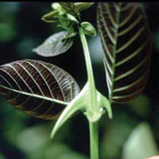
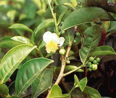
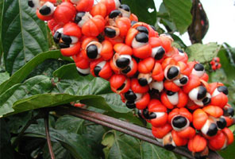

Cat's Claw (Uncaria tomentosa)
Cat's claw (U. tomentosa) is a large, woody vine that derives its name from hook-like thorns that grow along the vine and resemble the claws of a cat. Two closely related species of Uncaria are used almost interchangeably in the rainforests: U. tomentosa and U. guianensis. Both species can reach over 30 m high into the canopy. U. tomentosa has small, yellowish-white flowers, whereas U. guianensis has reddish-orange flowers and thorns that are more curved. Cat's claw is indigenous to the Amazon rainforest and other tropical areas of South and Central America, including Peru, Colombia, Ecuador, Guyana, Trinidad, Venezuela, Suriname, Costa Rica, Guatemala, and Panama.
There are other species of plants with a common name of cat's claw (or uña de gato) in Mexico and Latin America; however, they are entirely different plants, not belonging to the Uncaria genus, or even the Rubiaceae family. Several of the Mexican uña de gato varieties have toxic properties.
Properties/Actions Documented by Research:
anti-inflammatory, antiulcerous, anticancerous, antidepressant, antileukemic, antimutagenic (cellular protector), antioxidant, antitumorous, antiviral, contraceptive, immune stimulant
Other Properties/Actions Documented by Traditional Use:
analgesic (pain-reliever), anticoagulant (blood thinner), antidysenteric, blood cleanser, detoxifier, diuretic, gastrotonic (tones, balances, strengthens the gastric system), hypocholesterolemic (lowers cholesterol), tonic (tones, balances, strengthens overall body functions), wound healer

Suma (Pfaffia paniculata)
Suma is a large, rambling, shrubby ground vine with an intricate, deep, and extensive root system. It is indigenous to the Amazon basin and other tropical parts of (southern) Brazil, Ecuador, Panama, Paraguay, Peru, and Venezuela. Since its first botanical recording in 1826, it has been referred to by several botanical names, including Pfaffia paniculata, Hebanthe paniculata, and Gomphrena paniculata. The genus Pfaffia is well known in Central and South America, with over 50 species growing in the warmer tropical regions.
Properties/Actions Documented by Research:
analgesic (pain-reliever), anti-inflammatory, antitumorous, anticancerous, antileukemic, aphrodisiac, cellular protector, hypocholesterolemic (lowers cholesterol), immunomodulator (selectively modulates overactive immune cells), steroidal
Other Properties/Actions Documented by Traditional Use:
adaptogen, anti-allergy, antioxidant, cardiotonic (tones, balances, strengthens the heart), carminative (expels gas), estrogenic, immunostimulant, nervine (balances/calms nerves), stimulant, tonic (tones, balances, strengthens overall body functions)

Guaraná (Paullinia cupana)
Guaraná is a creeping shrub native to the Amazon (and particularly the regions of Manaus and Parintins). In the lushness of the Brazilian Amazon where it originates, it often grows to 12 m high. The fruit is small, round, bright-red in color, and grows in clusters. As it ripens, the fruit splits and a black seed emerges - giving it the appearance of an "eye" about which Indians tell legends.
Properties/Actions Documented by Research:
analgesic (pain-reliever), antibacterial, antioxidant, hyperglycemic, memory enhancer, nervine (balances/calms nerves), neurasthenic (reduces nerve pain), platelet aggregation inhibitor (to prevent clogged arteries), stimulant, vasodilator
Other Properties/Actions Documented by Traditional Use:
anticoagulant (blood thinner), antiseptic, aphrodisiac, appetite suppressant, astringent, blood cleanser, cardiotonic (tones, balances, strengthens the heart), carminative (expels gas), central nervous system stimulant, digestive stimulant, diuretic, hypotensive (lowers blood pressure), laxative, menstrual stimulant, thermogenic (increases fat-burning)